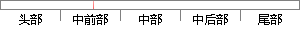

21世纪是信息化时代，个人数据被大量收集和利用，医疗数据也不例外。
片段位置图

相似结果|
相似片段 1：如今进入信息化时代，医院甚至院外的大量个人健康信息被收集保存，形成以个人为中心的完整健康信息库，使数据驱动个性化医疗成为可能。如今医疗数据快速增长，达PB级，传统的数据工具已难以管理和处理海量数据
相似片段 2：、标准化”为主要特征，其结果是造成大量医疗浪费，医疗费用的不断攀升，不良反应普遍存在；如今已经进入信息化时代，医院甚至院外的大量个人健康信息被收集保存，形成以个人为中心的完整健康信息库，使数据驱动个性化
|
※ 片段修改建议 ※
近似词参考：- 时代：时期 期间
- 个人：小我 小我私家
- 收集：搜集 网络 采集
- 利用：操纵 哄骗 使用 行使 应用
- 例外：破例
系统自动生成语句： 21世纪是信息化时期，小我数据被大量搜集和操纵，医疗数据也不破例。
注：本片段修改建议为系统自动生成，仅供参考。